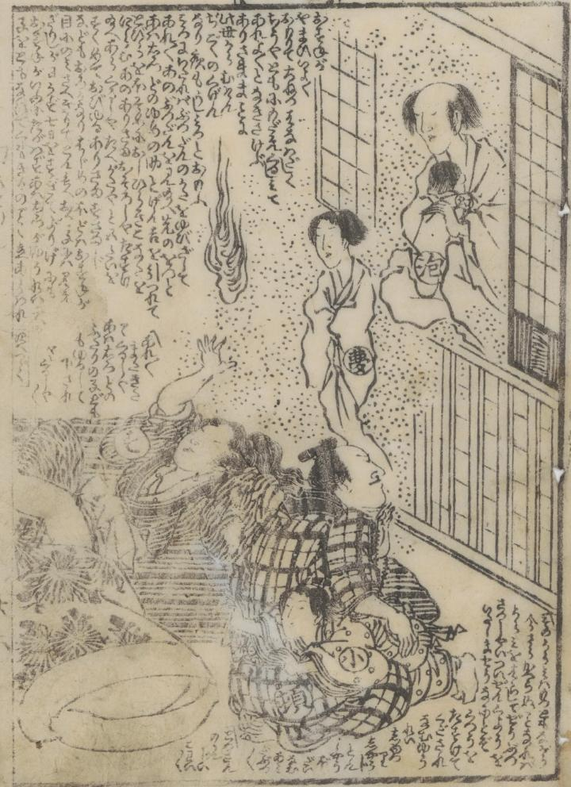

幽霊が、二人の子供とともに、鱅頓兵衞の家に現われている。火の玉もみえる。
著作者：式亭三馬・一勇齋國芳／出典：親書誌：U426_nichibunken_0382：こはだ小平次鱅頓兵衞敵討幻双紙 6巻；コハダ コヘイジ コノシロ トンベエ カタキウチ マボロシゾウシ 6カン／日付：2014／資源識別子：U426_nichibunken_0382_0009_0000
Copyright (c)2010- International Research Center for Japanese Studies, Kyoto, Japan. All rights reserved.